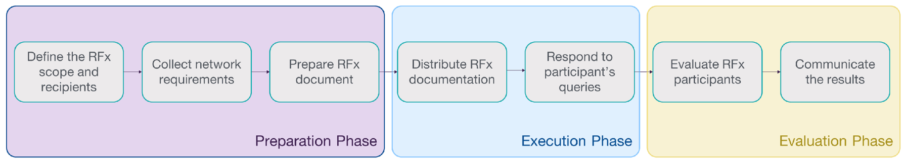
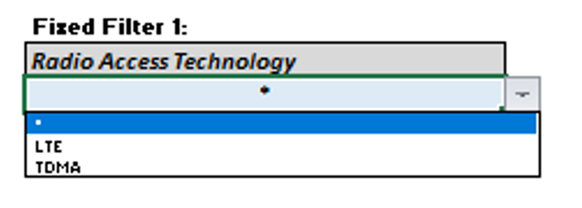

6 Step 6. Execute RFx and select vendors

After steps 3, 4, or 5, you may decide that you're ready to engage with consultants and/or vendors. It is recommended to manage initial vendor engagement through a request for information (RFI), request for proposals (RFP) or request for quotations (RFQ).
The value of the RFx process lies in the opportunity to obtain industry knowledge and best-in-breed offerings at competitive prices.
This step introduces a structured approach to facilitate and accelerate the procurement process to obtain all the necessary network equipment and critical services to deploy your fixed wireless access (FWA) network.
The general guidelines to proceed within this step are as follows:
● After steps 3, 4, or 5; to continue with the journey, you may need to get specific information regarding capabilities and budgetary pricing of products and services that will be required to deploy your Network. In this case, you can use the RFI for Fixed Wireless Solutions provided in step 6. An option to bypass this process is the Tech Solutions Matrix, also included as part of that step.
Based on the analysis of vendors' responses, the next step can be to finalize your business plan (step 7) using budgetary pricing data from vendors to obtain funding. Alternatively, you may decide that you'll need additional support to manage your Network's implementation and continue with an RFP for consulting services.
● Once you have completed steps 1 and 2, you have achieved your business plan's foundations: definition of coverage targets and service requirements. From this point forward, other steps of the journey can be supported by a consultant.
If this is your preference, you can use the RFP for Consulting Services provided in step 6.
Under this option, the consultant will support you in finalizing your business plan, managing vendor engagement, and overseeing implementation.
● When you're ready to procure equipment and network implementation services � this means that you have a budget available and you have at least completed step 3 in the journey �, the recommended option � if you haven't executed the RFI � is to execute an RFP for network equipment and implementation services.
As an alternative, when you have executed a previous RFI or already have a shortlist of vendors, you can issue an RFQ, which is a faster process to get final pricing data for the desired equipment and services.
Based on the RFP or RFQ responses, you can assess and select a single vendor or a set of vendors to enter negotiations and finalize an agreement to commence network implementation.
6.1 RFx Process Essentials
An RFX process can be thought of as the means to conduct business with the right vendors and consultants. Standard RFx processes are the request for information (RFI), request for proposals (RFP), and request for quotation (RFQ). The following subsections provide an overview of the RFx process, explaining RFI, RFP, and RFQ particularities.
As mentioned before, the RFx process is an organized and structure approach to interact with vendors/consultants. In this way, each RFx participant will submit the same formatted document that will allow you to compare the different proposals fairly.
Furthermore, multiple vendors/consultants can participate in the same RFx process to comply with a single scope simultaneously. Therefore, there is a reduction in the time required to hold multiple meetings with each participant to review their particular proposals.
6.1.1 �RFx Process Overview
The RFx process consists of three phases: preparation, execution, and evaluation, as shown in Figure 6.1. The following subsections examine each of these three phases.

Figure 6.1 � Phases of RFx process
RFx preparation phase
It�s the first phase of the process, where you define and collect the required information that accurately describes your necessities and conditions. The outcome of this phase is the RFx document that you�ll use to interact with the RFx recipients.
The RFx preparation phase comprises the following tasks:
1. Define the RFx scope and recipients � Describe activities, deliverables, and associated timelines associated with the RFx. Depending on the type of RFx process, you may include the definition of the required network equipment, network design, implementation, and/or consultant services. Based on the scope, you must define the RFx recipients, which may include, among others, equipment vendors, engineering consultants, or system integrators.
2. Collect the network requirements � Collect the business and technical specifications that define your FWA network, such as: coverage targets, spectrum use, service offerings, and existing infrastructure assets. This is supported through previous steps in this playbook.
3. Prepare the RFx document: This document contains all the information required so that vendors and consultants are able to provide a useful and accurate response to your needs. This is the document that will be distributed to the RFx participants. Depending on the main scope and required outcome of the process, different RFx alternatives are considered (when to use each of them is addressed in section 6.2). This playbook provides a set of RFx templates that you can use to create your own RFx.
RFx execution phase
Once you have developed your RFx document, the next step is to distribute it to the recipients and clarify any further questions. The RFx execution phase consists of the following activities:
4. Distribute the RFx documents: The RFx documents must be distributed to the RFx participants interested in the TL project. For this, the potential RFx participants can be invited through a letter asking for their participation in the process. This playbook provides an invitation letter template that you can use to distribute an invitation to all potential vendors/consultants that might participate in the RFx process.
To those vendors/consultants that confirm their participation in the RFx process, you must send the RFx document and the queries and response template to clarify any potential question regarding the process.
5. Respond to participants queries: Queries from RFx participants are received and collected in a single document. For the sake of fairness, all received questions must be anonymized, clarified, and redistributed to all RFx participants.
RFx evaluation phase
In this phase, you�ll evaluate the submissions from RFx participants looking for relevant information that allows you to compare their product/service offering and select one or more vendors for negotiations and potential procurement. The RFx preparation phase comprises the following activities:
6. Evaluate RFx participants: After submissions are received, they must be evaluated to identify the most qualified to address your necessities. The submissions are evaluated using a weighted score, where the areas of most significant interest (e.g., vendor�s background, reference pricing) are valued most heavily. In the end, the RFx participant with a higher score that can prove that it can comply with all mandatory criteria should be selected as the RFx winner.
This playbook provides a vendor evaluation tool that you can use to evaluate the RFx participants in terms of their solution proposal, service proposal, project experience, and pricing.
7. Communicate the results: To complete the process, you must to notify your decision to all the RFx participants. Those participants that were not selected in the process should also be notified.
At this point, you already know the generic process that applies to all the RFx alternatives. Section 6.2 examines in further detail each of these alternatives and provides guidelines to select the most appropriate for you. In addition, Section 6.3 describes the evaluation process required to select the RFx winner.
6.2 Executing the RFx process
This section provides an overview of the different RFx processes and general guidelines to select the most appropriate to support your Journey. Furthermore, it describes the use of the different templates to support you in the preparation phase of the RFx process.
Different RFx alternatives are possible depending on the main scope and required outcome of the process. The following subsections provide a description of each of these alternatives and the tools that support their development. In addition, in the following sections, you will find the general guidelines to select the most appropriate one for your specific case.
6.2.1 Executing an RFI for fixed wireless access solutions
An RFI is an appropriate selection when you need to obtain general information from vendors. You can use an RFI process after completing steps 3, 4, or 5 of your Journey when you need to get specific information regarding capabilities and budgetary pricing of products and services that will be required to deploy your Network.
The main advantage of the RFI is its simplicity, being easy to prepare and fast to respond. In addition, the vendors� responses can also inform you to generate more concrete questions for an eventual RFP/RFQ. Finally, an RFI does not imply a commitment to purchase, and the request is limited to budgetary pricing and a description of the vendor�s capabilities or solutions.
������� Use the �RFI for FWA Solutions Template� to create the RFI document
To create a complete document including all the relevant information for your RFI initiative, follow the instructions below:
1. Define the scope of the RFI
By using the RFI for fixed access solution template, you will be able to collect information and budgetary estimates regarding the following products and services:
● Network Equipment (CPEs, RAN, Backhaul, Core, IT hardware)
● Network Systems (Billing, Ticketing, Network Management Systems)
● Site Surveys Execution
● Low-Level Network Design Development
● Network Deployment Services (Installation & Commissioning)
The provided template is already pre-filled with the required information for your RFI document. However, you can adapt the content to further customize it according to your necessities.
2. Define who will be the recipient of the document.
Due to its nature, the RFI must be addressed to vendors and system integrators that can cover at least one of the categories defined in step 1. In this way, you can understand the vendor ecosystem and reduce the vendor list only considering those that comply with the requirements.
To identify possible candidates to be participants in your RFI process, follow the guidelines below:
● For vendors, identify the Tech Solutions Matrix vendors that offer equipment similar to your necessities and search for a local distributor. In some cases, you can find a local reseller that can offer better prices for small-volume purchases.
● For system integrators, search for system integrators with proven experience in successful projects in areas close to your tribal land. It is recommendable to check the references they provide and to find their expertise in the RFI scope.
3. Collect the required inputs.
Depending on the initiative step, you will require to include part of the following inputs in the document. Follow the instructions below to fill the RFI template.
|
Input |
Description |
Playbook Support |
|
Coverage Target |
Indicates the area where you will be offering the broadband service. |
Defined in "Step 1: Perform market and coverage analysis" |
|
Existing network infrastructure data (Optional) |
Describe the infrastructure assets that can be used to deploy the network equipment. |
Generated in "Step 3: Assess key resources" using the Data Collection Kit |
|
Network architecture (Optional) |
Defines the type of architecture and technologies to be considered in the network. |
Generated in "Step 4: Establish the Network architecture" using the Network Architecture Wizard |
|
Network design (Optional) |
Defines the technology solutions to be implemented on each of the network sites that are part of the network |
Generated in "Step 5: Develop preliminary network design" |
Table 6.1 - Guidelines to fill required inputs in RFI for FWA services template
4. Follow the template�s instructions to fill the rest of the document.
To fill the rest of the RFI document, follow the indications that are provided throughout the template. These are notes and instructions that you can easily identify as they are supplied in red text. Once you have entirely customized the RFI template, do not forget to remove all the indications and notes.
Step 5: Continue with the Execution Phase of the RFI process.
6.2.2 Executing an RFP for consulting services
This RFP addresses the case when a Tribal Land decides to seek support and guidance to manage their FWA network evaluation, selection, and implementation process. Some of the drivers to pursue this path are the following:
● The Tribal Land team lacks resources with technical background
● The timelines to deploy the network are tight
● The Tribal Land has a large area which potentially requires the deployment of more than ten sites
● The Tribal Land coverage targets are situated in a challenging or extreme terrain
This process can be executed once you have completed steps 1 and 2 when you have defined your business plan's foundations: definition of coverage targets and service requirements. Finally, this option is appropriate when you�re ready to procure and engage with consulting services, which means you have a budget available.
������ Use the �RFP for consulting services template� to create the RFP document
To create a complete document including all the relevant information for your RFP initiative for consulting services, follow the instructions below:
1. Define the scope of the RFP
By using the RFP for consulting services template, you will be able to request specific information for the following services:
● Area survey, site surveys & infrastructure assessment (in case that the Tribal Land has not performed the network data collection process)
● High-level network design
● RFP management for equipment procurement, engineering, and deployment services
● Low-level network design to validate designs from vendor equipment
● Vendor management through equipment procurement, delivery, and installation & commissioning process
● Site acceptance procedures
The provided template is already pre-filled with the required information for your RFP document. However, you can adapt the content to further customize it according to your necessities.
2. Define who will be the recipient of the document.
This RFP should be targeted to engineering and independent consultants that can cover at least one of the categories defined in Step 1. In this way, you can understand the service provider ecosystem and reduce the candidate list by only considering those that comply with the requirements.
To identify possible candidates to be participants in your RFP process, follow the guidelines below:
● For engineering and independent consultants, search for consultants with proven experience in successful projects in areas close to your tribal land. It is recommendable to check the references they provide and to find their expertise in the RFP scope.
3. Collect the required inputs.
Depending on the initiative step, you will require to include part of the following inputs in the document. Follow the instructions below to fill the RFP template.
|
Input |
Description |
Playbook Support |
|
Coverage Target |
Indicates the area where you will be offering the broadband service. |
Defined in "Step 1: Perform market and coverage analysis" |
|
Existing network infrastructure data (Optional) |
Describe the infrastructure assets that can be used to deploy the network equipment. |
Generated in "Step 3: Assess key resources" using the Data Collection Kit |
|
Network architecture (Optional) |
Defines the type of architecture and technologies to be considered in the network. |
Generated in "Step 4: Establish the Network architecture" using the Network Architecture Wizard |
Table 6.2 - Guidelines to fill required inputs in RFP for consulting services template
4. Follow the template�s instructions to fill the rest of the document.
To fill the rest of the RFP document, follow the indications that are provided throughout the template. These are notes and instructions that you can easily identify as they are supplied in red color text. Once you have entirely customized the RFP template, do not forget to remove all the indications and notes.
5. Continue with the Execution Phase of the RFP process.
6.2.3 Executing an RFP for network equipment & implementation services
This RFP option is appropriate when you�re ready to procure equipment and network implementation services, which means that you have budget available and that you have at least completed step 3 in the Journey.
 ������ Use the �RFP for network equipment &
implementation services template� to create the RFP document
������ Use the �RFP for network equipment &
implementation services template� to create the RFP document
To create a complete document including all the relevant information for your RFP initiative for network equipment and implementation services, follow the instructions below:
1. Define the scope of the RFP
By using the RFP for network equipment & implementation services template, you will be able to search for vendors to provide the following products and services:
● Network equipment (CPEs, RAN base stations, backhaul, core and IT hardware)
● Network systems (billing, ticketing, network management systems)
● Site surveys for existing and potential network sites.
● Low-level network design
● Network deployment (installation & commissioning)
The provided template is already pre-filled with the required information for your RFP document. However, you can adapt the content to further customize it according to your necessities.
2. Define who will be the recipient of the document. .
This RFP should be addressed to original equipment manufacturers (OEMs), system integrators, and value-added resellers that may provide one or more of the points defined in Step 1. In this way, the Tribal Land can assess and select the set of vendors that best suit their requirements.
To identify possible candidates to be participants in your RFP process, follow the guidelines below:
● For OEMs, identify the Tech Solutions Matrix vendors that offer equipment similar to your necessities and search for a local distributor. In some cases, you can find a local reseller that can offer better prices for small-volume purchases.
● For system integrators, search for system integrators with proven experience in successful projects in areas close to your tribal land. It is recommendable to check the references they provide and to find their expertise in the RFI scope.
● For value-added resellers, look for a provider that offers equipment according to your necessities and covers your tribal land. Some examples of this type of providers can be found here and here.
3. Collect the required inputs.
Depending on the initiative step, you will require to include part of the following inputs in the document. Follow the instructions below to fill the RFP template.
|
Input |
Description |
Playbook Support |
|
Coverage Target |
Indicates the area where you will be offering the broadband service. |
Defined in "Step 1: Perform market and coverage analysis" |
|
Existing network infrastructure data |
Describe the infrastructure assets that can be used to deploy the network equipment. |
Generated in "Step 3: Assess key resources" using the Data Collection Kit |
|
Network architecture (Optional) |
Defines the type of architecture and technologies to be considered in the network. |
Generated in "Step 4: Establish the Network architecture" using the Network Architecture Wizard |
|
Equipment technical requirements (Optional) |
Define the technical specifications for network equipment to be used in the network. |
Generated in "Step 4: Establish the Network architecture" using the Network Architecture Wizard |
|
Network design (Optional) |
Defines the technology solutions to be implemented on each of the network sites that are part of the Network |
Generated in "Step 5: Develop preliminary network design" |
Table 6.3 - Guidelines to fill required inputs in RFP for network equipment and implementation services template
4. Follow the template�s instructions to fill the rest of the document.
To fill the rest of the RFP document, follow the indications that are provided throughout the template. These are notes and instructions that you can easily identify as they are supplied in red color text. Once you have entirely customized the RFP template, do not forget to remove all the indications and notes.
5. Continue with the Execution Phase of the RFP process.
6.2.4 Executing an RFQ
The request for quotation (RFQ) process must be considered when you have obtained or developed a preliminary network design and need specific pricing data to trigger the purchase orders.
At this point, you already know the equipment technical specifications or even the specific vendor and model. Therefore, the RFQ only considers a reduced set of equipment vendors to be participants. This set of vendors can result from analyzing the RFI responses or via the Tech Solutions Matrix, a useful repository with preselected vendors for FWA networks.
Furthermore, an RFQ should be considered only when a budget to procure the associated equipment has been secured.
 ����� Use the RFQ template to create the RFQ document
����� Use the RFQ template to create the RFQ document
To create a complete document including all the relevant information for your RFQ initiative, follow the instructions below:
1. Define the scope of the RFQ
By using the RFQ template, you will be able to obtain specific pricing data to trigger the purchase orders for:
● Base stations
● CPEs
● Backhaul equipment
● Core equipment
● Network Systems
The provided template is already pre-filled with the required information for your RFQ document. However, you can adapt the content to further customize it according to your necessities.
2. Define who will be the recipient of the document.
The RFQ should be addressed to system integrators, original equipment manufacturers (OEMs), and value-added resellers that can cover the scope defined in Step 1.
To identify possible candidates to be participants in your RFP process, follow the guidelines below:
● For OEMs, identify the Tech Solutions Matrix vendors that offer equipment similar to your necessities and search for a local distributor. In some cases, you can find a local reseller that can offer better prices for small-volume purchases.
● For system integrators, search for system integrators with proven experience in successful projects in areas close to your tribal land. It is recommendable to check the references they provide and to find their expertise in the RFI scope.
● For value-added resellers, look for a provider that offers equipment according to your necessities and covers your tribal land. Some examples of this type of providers can be found here and here.
To further help you identify the network equipment vendors for FWA products, this playbook provides the Tech Solutions Matrix, which is a useful repository with preselected vendors for FWA networks. Details on the use of the Tech Solution Matrix is provided in the following subsection.
3. Collect the required inputs.
Before preparing the RFQ, it is necessary to collect the equipment�s technical requirements, which will determine the specific models that will be part of your FWA network. Follow the instructions below to fill the RFQ template.
|
Input |
Description |
Playbook Support |
|
Equipment technical requirements |
Define the technical specifications for network equipment to be used in the network. |
Generated in "Step 4: Establish the Network architecture" using the Network Architecture Wizard |
|
Equipment Bill of Quantities |
Include the required number of equipment for each technology. |
Generated in "Step 5: Develop preliminary network design" |
Table 6.4 - Guidelines to fill required inputs in RFQ template
4. Follow the template�s instructions to fill the rest of the document.
To fill the rest of the RFQ document, follow the indications that are provided throughout the template. These are notes and instructions that you can easily identify as they are supplied in red color text. Once you have entirely customize the RFQ template, do not forget to remove all the indications and notes.
5. Continue with the Execution Phase of the RFQ process.
 ������ Use the Tech Solution Matrix to support the RFQ
process
������ Use the Tech Solution Matrix to support the RFQ
process
The Tech Solutions Matrix is a repository in the form of a spreadsheet that contains products from different vendors that comply with common technical specifications required in a FWA network. The information is organized in the following categories.
- RAN Base Station (BS)
- Customer premises equipment (CPE) & home routers
- Transport/backhaul equipment
- Core/aggregation
- Operational support system (OSS) and business support system (BSS)
Follow the steps below to search for network equipment/vendors that meet your technical specifications:
1. In the Tech Solutions Matrix spreadsheet, identify the Dashboard sheet, as shown in Figure 6.2. This dashboard allows you to filter and compare equipment of the categories mentioned above.�
Figure 6.2 � Dashboard sheet in the Tech solution Matrix
2. Identify the category section of your interest, as displayed in Figure 6.3. You can find a specific section from all the defined categories.

Figure 6.3 � RAN equipment section from dashboard sheet
3. In this specific section, you can find the different filters that can be applied in your search. The Fixed Filters correspond to the most relevant equipment characteristics. In addition, you can further customize your search with the Custom Filters.

Figure 6.4 � Example of a fixed filter for RAN equipment section
4. After selecting the filters of your interest, click the Apply Filters Button to obtain your search results. The result will show a list of equipment that matches with the selected filters. You can use this information to compare the equipment from different vendors, as shown in Figure 6.5.

Figure 6.5 � Result of the Tech solution matrix repository
6.3 Assessing RFx Participants
After receiving the submissions from different vendors/consultants, you need to perform an evaluation process to select one or more vendors for final negotiations. This playbook provides a Vendor Evaluation Tool that you can use to perform the evaluation process.
Due to the different nature of the RFx processes, two versions of the tool are available:
● ����� Evaluation tool for consultancy services: Used to evaluate the RFP process responses addressed to consulting services, as described in section 6.2.2.
● ����� Evaluation tool for vendor equipment: Used to evaluate responses from an RFP process addressed to network equipment and implementation services, as described in section 6.2.3.
To perform the evaluation process using the evaluation tool, follow the steps below. This process applies to both versions of the evaluation tool.
1. Evaluate the general vendor/consultant characteristics using the criteria evaluation table
The criteria evaluation table is used to evaluate each vendor according to different predefined questions divided into various categories with a specific table for each category. Figure 6.6 shows a sample of the criteria evaluation table.

Figure 6.6 � Criteria Evaluation Table
The information included in this table is:
- Question number: It is a reference number for the questions to be evaluated
- Questions: Predefined questions to evaluate the different aspects of the vendor/consultant.
- User weight: It is a weight assigned by the user for each question. You can set the criteria with a scale of your preference. The higher the weight, the higher the criteria relevance.
- Response evaluation guideline: It is a reference method to evaluate the related question with points/scores.
- Points: Are the user�s points to the vendor�s response included in the proposal. These points are assigned using as a reference the response evaluation guidelines.
- Weighted score: Calculated score for each question, taking as a reference the user weight, assigned points, and overall weight of each criteria.
2. Evaluate pricing using the Pricing Table
The pricing table is used to evaluate the overall pricing of each consultant. Figure 6.7 displays a sample of the criteria evaluation table.

Figure 6.7 � Consultant Pricing Table
The information included in this table is:
- Grand total (Input from the user): Total cost/charge of each consultant for all the products and services provided.
- Pricing score: The pricing score is a relation of the actual cost of provided by each vendor compared to the lowest price of all evaluated participants. It provides a reference for the incremental cost of each proposal.
3. Consult the results in the Evaluation Summary Table
The evaluation summary table shows each vendor/consultant�s overall scores according to the different evaluated criteria. The summary in Figure 6.8 shows five different consultant scores.
Figure 6.8 � Evaluation summary of consultancy services
The information included in this table is: �������������
- Criteria: Factors that will be evaluated to select a vendor/consultant.
- Weighting criteria: You should adjust the overall weight of each criteria to be evaluated. These values are percentages and should add 100%. The weight for each criteria represents the relevance that you want to give it; the higher the number, the higher the relevancy.
- Total score: This is the result of the evaluation of each criteria. It represents the overall capability of each consultant to fulfill the scope.
4. Select the RFx winner based on the total score from the evaluation results
6.4 Next steps
Once you have developed the RFx process of your selection, there are some alternatives to continue with your Journey. The general guidelines to proceed within this step are as follows:
After completing an RFI Process
Based on the analysis of vendors� responses, the next step can be to finalize your business plan (step 7) using budgetary pricing data from vendors to obtain funding. Alternatively, you may decide that you�ll need additional support to manage your network�s implementation and continue with an RFP for consulting services.
After completing an RFP for consulting services
Under this option, the consultant will support you in finalizing your business plan, managing vendor engagement, and overseeing implementation.
After completing an RFP for network equipment & implementation services or RFQ process
Based on the RFP or RFQ responses, you can assess and select a single vendor or a set of vendors to enter negotiations and finalize an agreement to commence network implementation.